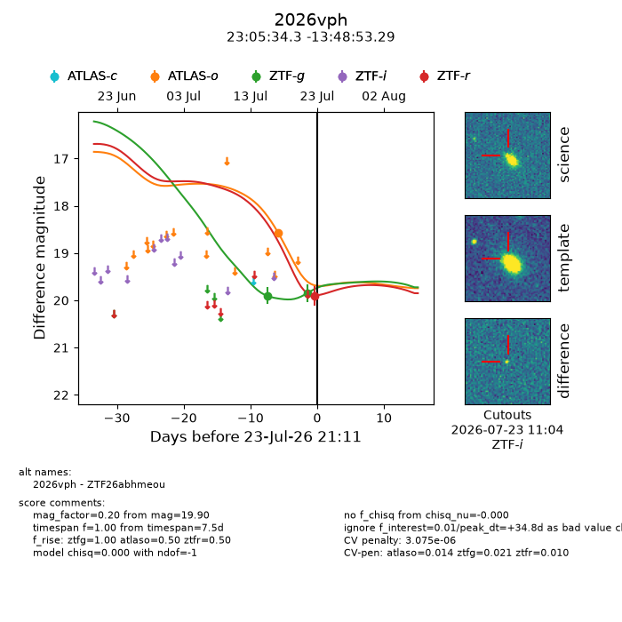
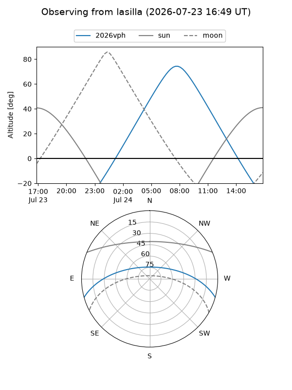
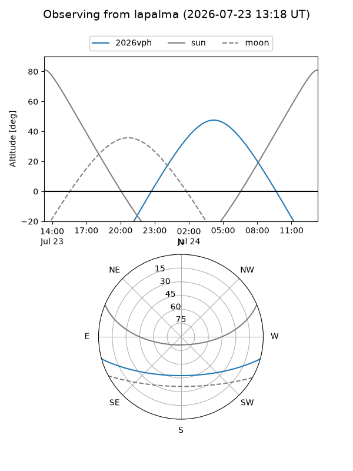
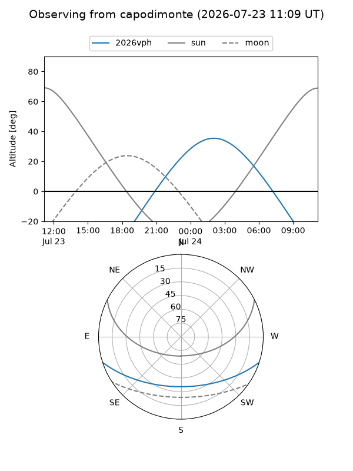
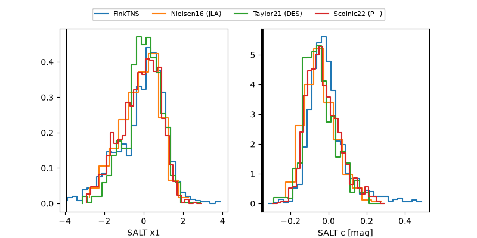

2026vph
Target 2026vph at 2026-07-23 21:14
Aliases and brokers:
FINK-ZTF: ztf.fink-portal.org/ZTF26abhmeou
Lasair-ZTF: lasair-ztf.lsst.ac.uk/objects/ZTF26abhmeou
ALeRCE-ZTF: alerce.online/object/ZTF26abhmeou
YSE-PZ: ziggy.ucolick.org/yse/transient_detail/2026vph
TNS name: wis-tns.org/object/2026vph
Direct TNS query: direct search
alt names
ZTF26abhmeou (ztf,fink_ztf)
2026vph (tns,yse)
Coordinates:
equatorial (ra, dec) = 346.3929,-13.81480
equatorial (HMS+DMS) = 23:05:34.31,-13:48:53.29
galactic (l, b) = (55.9505,-61.95123)
Flags:
peak dt: +34.8
likely cv: !!
Photometry:
last atlaso=18.57, ztfg=19.84, ztfr=19.90
1 atlaso, 2 ztfg, 1 ztfr detections
Lightcurve

Visibility



Additional plots
